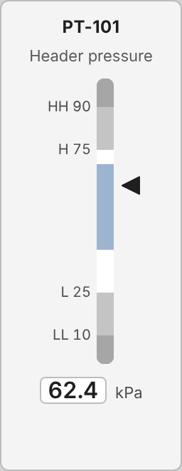

<figure class="card" id="EFC_AnalogIndicator_B_PointerScale"><div class="view" style="width:124px;height:320px"><div class="stage" style="width:128px;height:330px;transform:scale(0.9697)"><div class="hit" style="position:absolute;inset:0;pointer-events:none" title="click: open dynamic window"></div></div></div><figcaption><code>EFC/AnalogIndicator/B_PointerScale</code><br><b class="ok">T_KPI</b> &middot; dock <code>dw_ProcessValue</code><br>click symbol: open dock<br><i>render with planned fix 7 (alignItems: stretch); as committed the zone bars collapse</i></figcaption></figure>